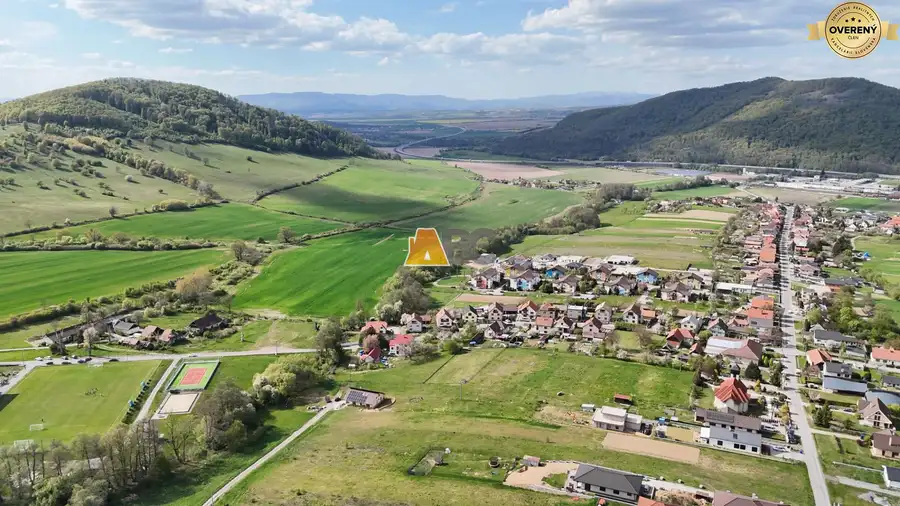
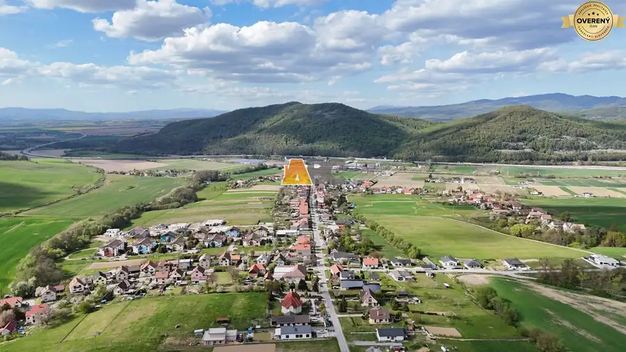
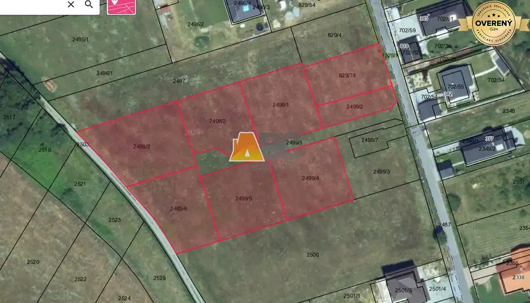
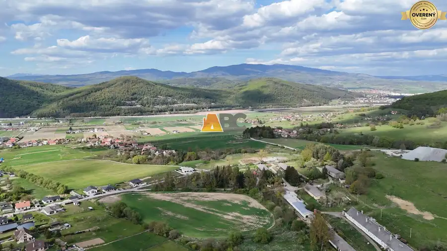
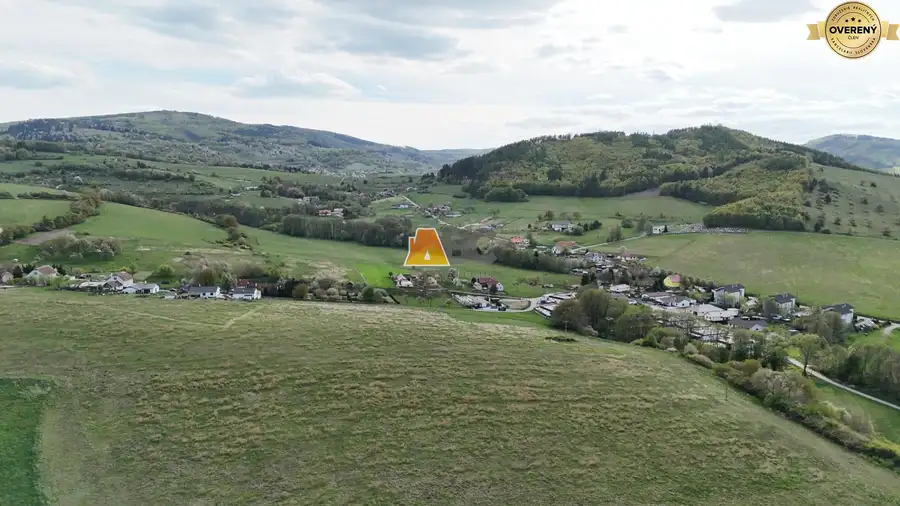
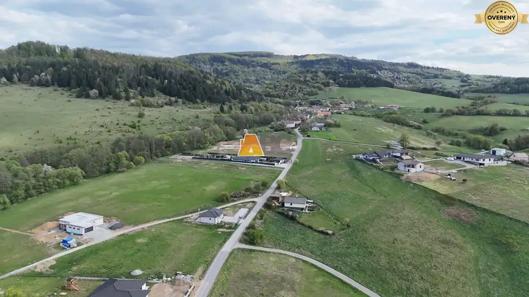
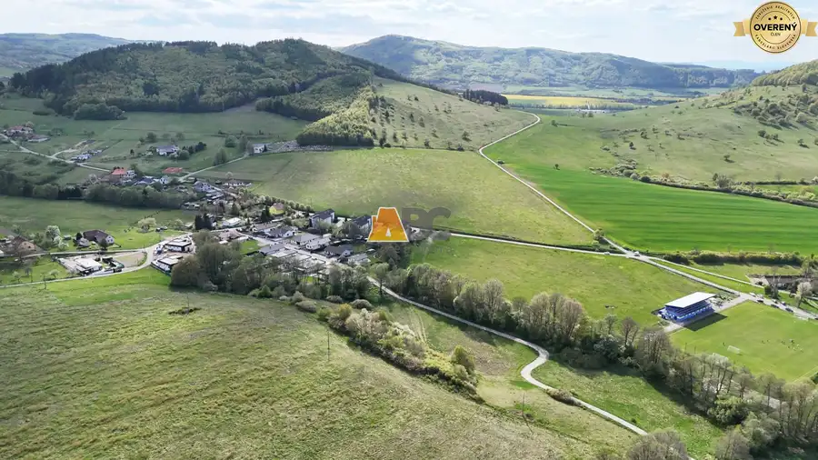

Pozemky pre rodinné domy Stožok
Stožok








- Plocha854 m²
- Poschodie0.
- Vlastníctvoosobné
O nehnuteľnosti
HLAVNÉ BENEFITY
Úžasné prostredie a panoramatické výhľady
= každodenná potrava pre dušu a zaručený relax po práci.
Rozmery a tvary parciel
= Takmer štvorcové tvary a ideálne výmery znamenajú, že na pozemok pohodlne umiestnite dom aj záhradu, no zároveň nebudete jeho „otrokom“.
Slnečná orientácia
= Juhozápadná orientácia zabezpečí dostatok prirodzeného svetla po celý deň a úsporu na energiách.
Nová komunita
= Budujete domov v novej štvrti, kde vznikajú priateľské susedské vzťahy v modernom a bezpečnom prostredí.
LOKALITA
Obec ponúka kompletnú občiansku vybavenosť a výbornú logistiku, čo ocenia všetky vekové kategórie:
Dostupnosť:
Rýchle napojenie na R2 (5 min).
Mestá na dosah:
Detva 7 min, Zvolen 20 min.
Sloboda pre mládež:
Pravidelné vlakové a autobusové spojenia do okolitých miest.
AKTUÁLNE VOĽNÉ PARCELY
Vyberte si veľkosť, ktorá vám vyhovuje najviac:
784 m² | 854 m² | 866 m²
881 m² | 888 m² | 967 m²
Exkluzívna výmera: 1 143 m²
Sme na začiatku predaja, preto máte momentálne najširší výber. Tie najlepšie kúsky s najkrajším výhľadom sa však zvyčajne minú ako prvé.
Nečakajte, kým vás niekto predbehne a zavolajte mi:
Parametre
- Rozloha pozemku
- 854 m²
- Poschodie
- prízemie
- Vlastníctvo
- osobné
- Status
- aktívne
- Voda
- studňa a vodovod
- El. napätie
- 230/400V
- Plyn
- nie
- Kanalizácia
- áno
- Orientácia
- juhozápadná
- Terén
- mierny svah
- Prístupová cesta
- asfaltová cesta
- Pripravené na výstavbu
- schválené v územnom pláne
- Dátum zverejnenia
- 2026-04-29